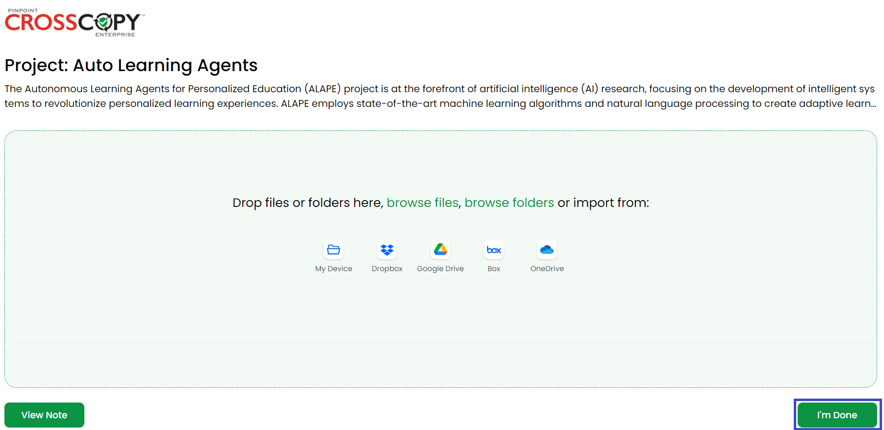
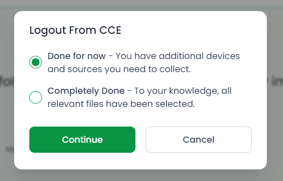
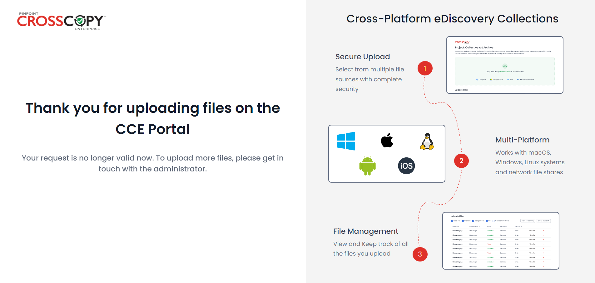

Once you have uploaded all of the files, click on the I’m Done button to complete your request.
You will see a prompt:
To complete your file uploading, select Completely Done and click on Continue. You will be logged out of the portal and would not be able to access it again till the admin generates a new request for you.
